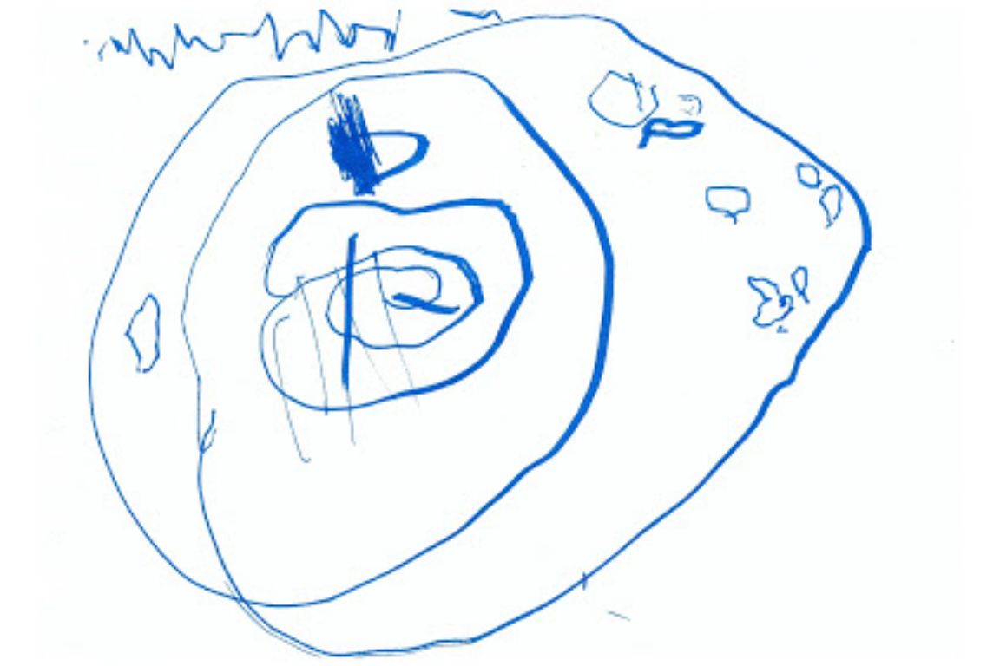
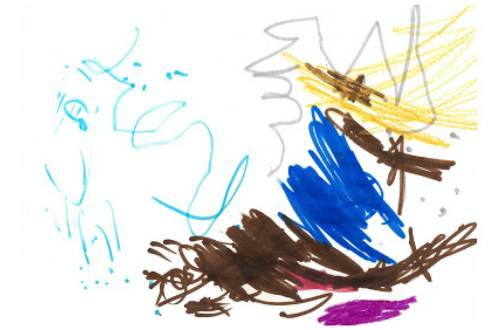
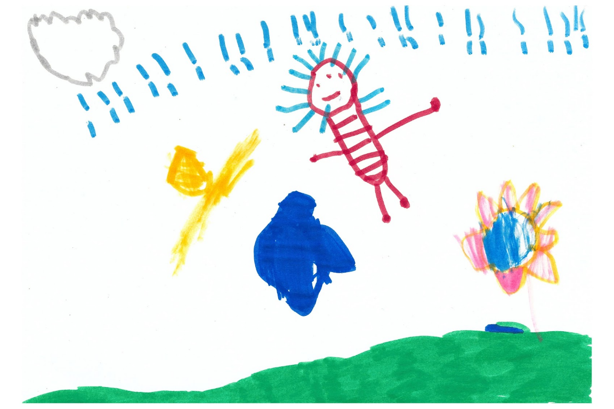
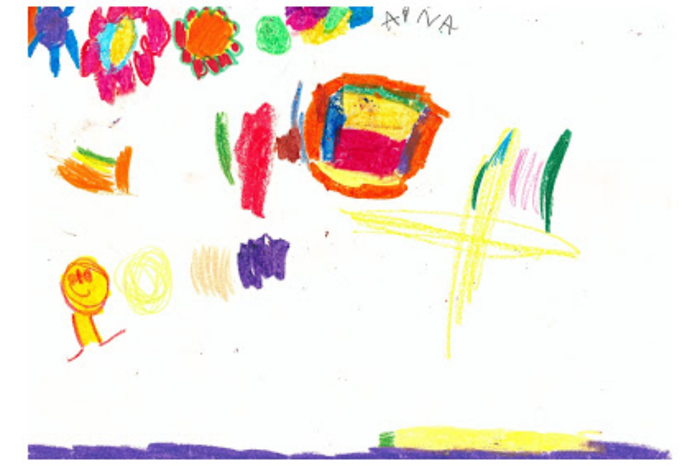
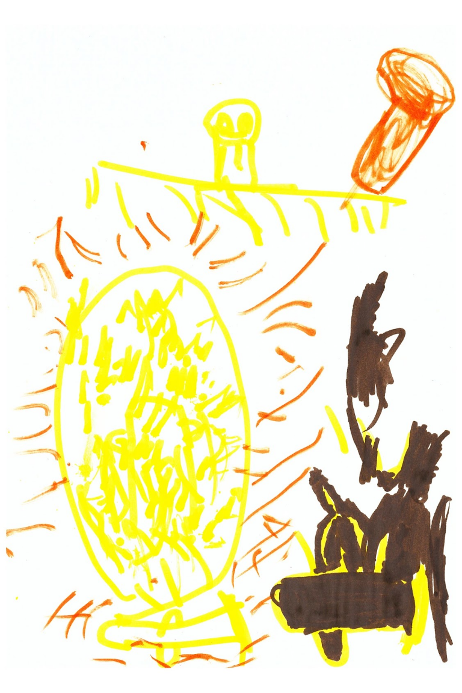
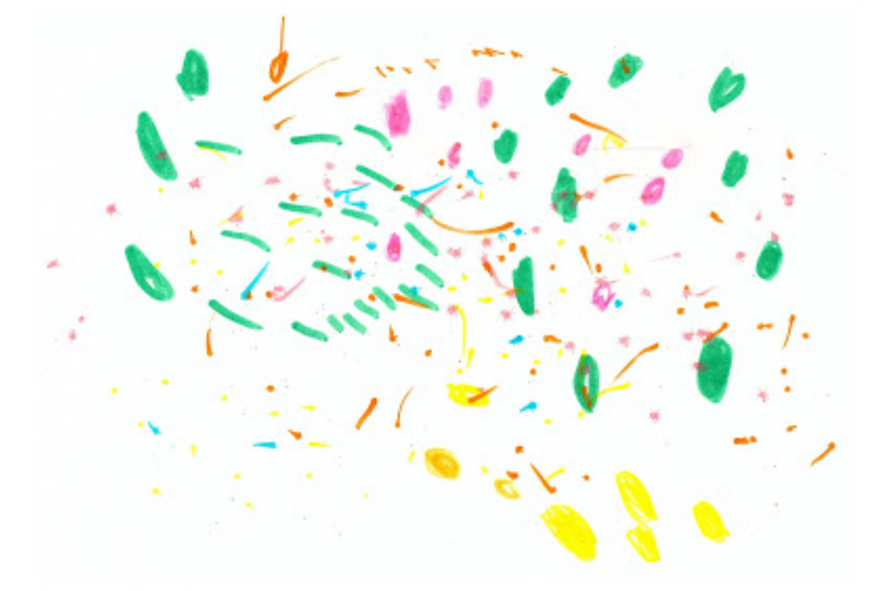
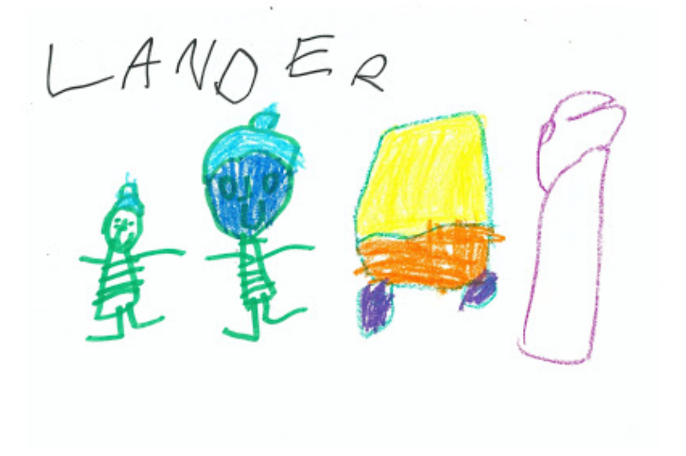
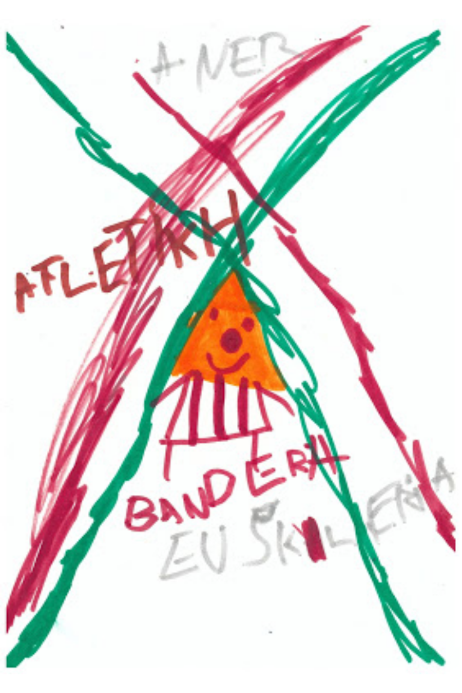

4 Idatzizko trebetasunak Lehen Hezkuntzan

Irakurtzea eta idaztea elkarrekin doaz
Kapitulu honen hasieran irakurtze-ekintza nola ulertzen den ikusiko dugu, jarraian irakurketa prozesuaren analisia egingo dugu, irakurketaren irakaspeneri oratzeko. Azken horretan alfabetatzeaz, Hezkuntza Sisteman duen LHko kokapenaz eta irakurketaren lanketarako proposatzen diren estrategiez jardungo dugu. Irakurtzea eta idaztea lotzen dira hurrengo blokean, fokoa idazkuntzara eramanda. Azkenaurreko blokean kontaketaren garrantzia nabarmenduko dugu. Kapituluaren azken blokean egin beharreko zerrendatzen dira Heziberri2020 proiektuaren barruan kontuan izanbeharreko elementu batzuk, egin beharreko jarduera kokatzen hasteko. Amaieran gomendatzen diren baliabide batzuk eta kapituluko erreferentziak aurkituko dituzu.
Gorago azaldu den moduan, irakurketari dagokion ikuskeratik emango zaio abioa kapitulu honetako teoriari. Horrela, erakundeek planteatzen duten ulerkuntzatik hasi behar dugu, teoria eta praktikari justifikazio markoa eregiteko.
4.1 Erakundeetatik
Ahozko komunikazioarekin lotutako hizkuntza-trebetasunak ahaztuak izan ditu erabat gure eskola-sistemak. Eta, hala eta guztiz ere, behar-beharrezkoa da hizkuntza-trebetasunon garrantzia behar bestetan azpimarratzea, horiek emango baitiete aukera ikasleei beren komunikaziorako konpetentzia guztiz garatzeko, ikasgelan ikaskideen arteko komunikazioa errazteko eta esaten dituztenen esanahia behar bezala negoziatzeko. Esan gabe doa, noski, hori guztia funts-funtsezkoa dela gure neska-mutilek, arlo guztietan landuko dituzten ezagueren bitartez, beren trebetasun kognitibo-linguistikoak ganoraz landu ditzaten. Horrekin batera, baina, Euskal Autonomia Erkidegoko egoera soziolinguistikoa zein den kontuan hartuta, eta gure hizkuntzaren erabilera soziala eta normalizazio-prozesua sustatuko baditugu, begi-bistakoa da eskolan nahitaez bultzatu behar dugula gure ikasleek elkarrekin euskaraz hitz egin dezaten.
Era berean, garbi esan behar dugu hitz egitea eta entzutea, bai eta irakurtzea eta idaztea ere, elkarrekin estu lotuta daudela, eta, beraz, komeni dela ikaskuntza-jardueren sekuentzian hizkuntza-erabileraren bi alderdiak, ulerkuntza eta ekoizpena, integratzea. Eusko Jaurlaritzaren Legebiltzarra (2015:153)
4.2 Zer da irakurtzea?
PISA
… se entiende por competencia lectora la capacidad de un individuo para comprender, utilizar y reflexionar sobre textos escritos, con el propósito de alcanzar sus objetivos personales, desarrollar su conocimiento y sus capacidades, y participar en la sociedad.
OECD, (2014:7) +
La competencia lectora es la habilidad para comprender y utilizar las formas lingüísticas requeridas y/o valoradas por el individuo. Los lectores son capaces de construir significado a partir de una variedad de textos. Leen para aprender, para participar en las comunidades de lectores del ámbito escolar y de la vida cotidiana, y para su disfrute personal.
Ministerio de Educación y Ciencia (2007:19)
Aurreko definizio honen oinarrian ideia hauek daude:
- Prozesu konstruktiboa eta interaktiboa da. Anderson y Pearson, 1984; Chall, 1983; Kintsch, 1998; 2012; 2013; Ruddell y Unrau, 2004; Rumelhart, 1985
- Esanahia testua eta irakurlearen arteko interakziotik eraikitzen da, horri irakurlearen eskarmentuak eragiten dio. Britt, Goldman y Rouet, 2012; Snow, 2002
- Esanahia eraikitzeko trebetasun linguistikoek, estrategia kognitiboek eta metakognitiboek nahiz aurretik dakitenak esanahia sortzen dute. Baker y Beall, 2009; Kintsch, 2012; 2013; Pressley y Gaskins, 2006; Rapp y Van den Broek, 2005.
Tarte honetako erreferentzia guztiak Mullis & Martin (2016) lanean daude. Gehitu barik daude praktikotasunaren mesedetan.
4.3 Irakurtzea ulertzea da
Leer es el proceso mediante el cual se comprende el texto escrito.
Solé (1987)
4.4 Ikuspegi bi irakurketaren irakaskuntzan:
- Komunikazioaren ikuspegitik: Gizartean betetzen duen helburuari ematen dio garrantzia: Ingurua material inprimatuetan (Kartelak, elikagaien etiketak, seinaleak…) aberatsa dela ikusita, haurrak ulertzen hasten dira zer funtzio betetzen dituzten irakurtzeak eta idazteak beren gizartean.
- Kodea ikastearen ikuspegitik: zentzua ematen diegu idatzizko zeinuei, eta soinuen eta letren arteko harremana finkatzen dugu. Kontzientzia fonologikoa landu behar da.
4.4.1 Alfabetatze prozesua
- Alfabetatze partzialeko fasea:
5 urteen ingurukoa- Zenbait letraren izena edo soinua ikasi dute ikasleek.
- Ez dituzte erabiltzen letra guztiak, batzuk bakarrik; oro har, hasierako letrak eta, hainbatetan, azkena.
- Oker irakurtzen dituzte antzeko letrez osatutako hitzak.
- Alfabetatze osoko fasea:
6 urteen ingurukoa- Ikasleek letren eta soinuen arteko lotura guztiak ikasi dituzte.
- Hitzak irakurtzeko erabil ditzakete.
- Zehazki irakurtzen dute.
- Nekez nahasten dituzte antzeko letrez osatutako hitzak.
- Alfabetatze finkatuko fasea:
7 urteen ingurukoa- Osotasuntzat ikasten dituzte hitzak, eta buruz irakurtzen dituzte.
- Lotura fonologikoek ere hartzen dute parte fase honetan4.
4.4.1.1 Adibide batzuk: Zer du gustoko? ariketa HHn
Haur Hezkuntzako gela batean 3 urtetik 6 urtera arteko umeak daude elkarrekin, HH3, HH4 eta HH5. Apirilean egindako ariketa honetan umeek marraztu zuten zer duten gogoko eta izenburua idatzi dute. Lehenengo faseen arteko hurrenkera antzeman daiteke umeon lanetan.
KJO9I874ºGHU
## Linking to ImageMagick 6.9.7.4
## Enabled features: fontconfig, freetype, fftw, lcms, pango, x11
## Disabled features: cairo, ghostscript, rsvg, webp## Using 8 threads
3 urte eta 5 hile: “pelikula bat mounstroana”
OCIEA UEX OAEA

4 urte eta hilabete “lo egitea eta muinekakaz jolastea”
LORAK BIE

4 urte eta 5 hile: “lorak batzie”
DANSA EGTA

4 urte eta 7 hile: “dantza egitea”
KOPAKO COKOA

4 urte eta 9 hile: “kopako jokoa”
MUEAI JOLSTA

4 urte eta 9 hile: “muinekakin jolastea”
PAIOJ OLASTEA

5 urte eta 4 hile: “Playmobilakin jolastea”
ESKUPPILOTAN GOLSTEA

6 urte eta hile bi: “eskupilotan jolastea”
–
4.5 Eskolan gaur
4.5.1 Irakurketaren irakaskuntza Lehen Hezkuntzako lehen zikloan (6 eta 8 urteen artean)
- Bestalde, idatzizko kodean, testu- eta formatu-motetan eta idatzizko hizkuntza erabiltzeko moduetan sakontzen dute.
- Fonemaren eta grafemaren arteko harremana sendotzen dute.
- Lehen Hezkuntzako lehen zikloa funtsezkoa da idatzizko kodeaz jabetzeko, eta gela arruntean (berezko esparruan) heldu behar diogu jabekuntza horri.
4.5.2 Irakurketaren irakaskuntza Lehen Hezkuntzako bigarren eta hirugarren zikloetan (8 eta 11 urte bitartean)
- Irakurtzen ikasteari uzten diote eta ikasteko irakurtzen hasten dira
- Irakurketaren beste funtzio batzuk alde batera utzi gabe
Besteak beste, aisia, plazera, pertsonen arteko komunikazioa eta komunikazio soziala.
4.5.3 Helburua… irakurtzen duguna ulertzen irakastea:
- “irakurketaren funtsa” da irakurtzen duguna ulertzea, Durkin (1992:32)
- Prozesu horren bidez eratzen baitugu testuaren esanahia.
- Prozesu konplexua da testuen esanahia eratzea.
- Ez da prozesu automatikoa, eta, motibazioak eta intentzioak ez ezik, pentsatzeko eta arazoak konpontzeko prozesuek hartzen dute parte, baita irakurleek dakitenak ere.
4.6 Irakurritakoaren ulermen estrategiak
Dekodetzea ez da arazoa eta hitzak identifikatzeko mekanismoak garatuta daude. Testuari buruz aldez aurretik dakiena erabili behar du. Ulermen estrategiak erabiltzea komenigarria da: Metakognizioaren garrantzia (zer eta nola egiten duen ohartzea).
Ruizek & Aldekoak (2000) irakurtzeko estrategiak honela definitzen dituzte:
Arazoak konpontzeko edo helburu jakin bat lortzeko eman behar diren pausoak.
Hiru multzotan sailkatzen dituzte esrategiok:
- Irakurketa aurrekoak
garrantzitsuenak jatorrizko hiztun ez diren irakurleentzat. - Irakurri bitartekoak
- Irakurri ondorengoak
Estrategion helburua da zer ulertzen duten eta zer ez ohartaraztea, Sole (1992)
4.7 Eskema eta adibideak
Solék 1992an irakatsi beharko liratekeen estrategien honako eskema zehaztu zuen:
- Irakurketa aurrekoak:
Helburuak zehazteko eta aldez aurretiko jakintza ateratzeko.
Xedea ulertzea:- Zergatik irakurri behar dut? Zertarako irakurri behar dut?
Kasuan kasuko edukiaren jakintza aktibatzeko:
- Zer dakit testu horren edukiaz? Testu motta horretaz? Zer dakit autore horretaz? Zer dakit testuinguruaz?
- Zergatik irakurri behar dut? Zertarako irakurri behar dut?
Kasuan kasuko edukiaren jakintza aktibatzeko:
- Irakurri bitartean:
Ulertzen dena berrikusteko eta egiaztatzeko, akatsen aurrean neurriak hartzeko bidea ematen duten jarduerak:
Inferentziak:
Zein izan liteke eleberri edo ipuin honen amaiera? Zer proposatuko nuke hemen planteatzen den arazoa konpontzeko? Zer esanahi izan lezake hitz ezezagun horrek? Berrikustea eta laburtzea:
Zer azaldu nahi zen paragrafo, atal edo kapitulu honetan? Zer erlazio du aurrekoekin? Berregin al dezaket azaldutako argudioen haria? Zentzua neurtzea:
Ba al du zentzurik testu honek? Koherentea al da? Ulertzen al da? Zer zailtasun ditu? - Irakurri ondoren:
Irakurri bitartean lortutako ezagutza laburtzeko, sintetizatzeko eta hedatzeko jarduerak.
Arreta ideia nagusira zuzentzea:
Zein da testuak ematen duen informazio ezinbestekoa, irakurketa-helburua lortzekoa? Zer informazio jo ditzaket garrantzi gutxikoa? Eta funtsezkoa? Zer ekarpen egiten du testuak nik ez nekienik? Nola antolatuko ditut ideia nagusiak zentzua izango duen testu batean?
4.8 Testu motak ere garrantzia du…
Enseñar lenguan (Lomas & Osoro, 1994) lau trebetasun bereiztu zituzten: hitz egitea, entzutea, irakurtzea eta idaztea. Trebetasun horien bitartez helburu komunikatiboa lortzen genuela adierazi zuen. Trebetasun horiei makrotrebetasunak deitu zien.
Makrotrebetasun horien azpian mikrotrebetasunak identifikatu zituen, trebetasun bakoitzean egin beharreko ekintzak dira, esaterako:
- Idazteko sistema: grafiak identifikatu, hitzak nola ordenatzen diren ikasi…
- Hitzak eta esaldiak: hitzak identifikatu eta esanahia…
- Gramatika eta sintaxia: perpausaren zatiak identifikatu…
- Testua eta komunikazioa (mezua): informazioa bilatu, testua zehatz ulertu, abiadura egokian irakurtzen jakin…
Horretarako proposamen didaktikoak aurkeztu zituen.
Gaur egun, berriz,…
Prácticas letradas contemporáneas por Daniel Cassany: la perspectiva sociocultural (10 min).
4.9 Idaztea eta irakurtzea lotura duten prozesu bi dira?
Tradizioan: lehenengo irakurtzen eta gero idazten.
Ondoren: batera irakatsi eta ikasi beharreko jarduera bakartzat hartu zen, fase bi dituena: “lectoescritura”.
Zergatik? Biek testu idatzia hartzen dutelako oinarritzat. Fons Esteve (2004: 20)
4.9.1 Garatuta al dituzte ikasleek gaitasunak agintzen zaizkien testuak sortzeko?
Se escribe mucho pero se enseña poco a escribir… las prácticas explícitas de escritura, cuyo objetivo es incrementar las capacidades compositivas del alumnado, son escasas, breves y disciplinarias de lengua.
Cassany, Luna, & Sanz (2000:128)
Egoera horri aurre egiteko zenbait proposamen sortu ziren ideia honetan oinarrituta:
Jakintza eraiki behar da ikasleak lehendik dakiena aprobetxatuz eta egoera komunikatibo jakinetan. Hori konstruktibismoaren ideia duzu, igarriko zenuenez.
Baina, ikuspegi konstruktibista ezin da uztartu metodologia didaktiko zehatz batekin, ez baitago metodologia didaktiko konstruktibistarik; dagoena zera da: izaera konstruktibista duen estrategia didaktiko orokorra.
4.10 Hizkuntza idatzia eta konstruktibismoa
Zer ikasten dugu irakurtzen ikasten dugunean? Zer ikasten dugu idazten ikasten dugunean?
Konstruktibisten arabera, mezuak interpretatzen eta ekoizten ikasten dugu.
Irakurtzea eta idaztea ekintza sinbolikoak dira. Zergatik? Ez direlako diruditena (gainazal baten gaineko trazu batzuk), baizik eta adierazten dutena.
Zergatik esaten da umeak hizkuntza idatzia eraiki egiten duela?
Umea aktiboa da, ingurunetik datorkion informazioa etengabe interpretatzen eta berrantolatzen ari delako. Umeek hasiera batean ez dute ikusten idazkera hizkuntzari lotua. Hori prozesu geldo eta luze baten helmuga da. Idazkera sistema interpretatu nahian, hipotesiak formulatu, frogatu eta birformulatu egin beharko ditu.
4.11 Kapituluko erreferentziak
Cassany, D., Luna, M., & Sanz, G. (2000). Enseñar lengua (6. arg.). Bartzelona: Graó.
Durkin, D. (1992). Teaching Them to Read (6. argitalpena). Boston: Pearson.
Euskaltzaindia. (1998). Euskara batuaren ahoskera zaindua (EBAZ). Euskera: Euskaltzaindiaren lan eta agiriak, 43, 485–490.
Eusko Jaurlaritzaren Legebiltzarra. (2015). 236/2015 Dekretua, abenduaren 22koa, Oinarrizko Hezkuntzaren curriculuma zehaztu eta Euskal Autonomia Erkidegoan ezartzen duena. Euskal Herriko Agintaritzaren Aldizkaria, 2016ko urtarrilaren 15a, 141. Berreskuratua https://www.euskadi.eus/y22-bopv/eu/bopv2/datos/2016/01/1600141e.shtml -(e)tik
Fons Esteve, M. (2004). Leer y escribir para vivir: alfabetizacion inicial y uso real de la lengua escrita en el aula. Bartzelona: Graó.
Lomas, C., & Osoro, A. (1994). Enseñar Lengua. In El enfoque comunicativo de la enseñanza de la lengua (or. 17–30). Bartzelona: Paidós Ibérica.
Ministerio de Educación y Ciencia. (2007). PIRLS 2006. Estudio internacional de progreso en comprensión lectora de la IEA. Informe español. Madril: Ministerio de Educación y Ciencia.
Mullis, I. V. ., & Martin, M. O. (Arg.). (2016). PIRLS 2016. Marco de la evaluación (2. arg.). Madril: Ministerio de Educación Cultura y Deporte. Berreskuratua https://www.mecd.gob.es/inee/dam/jcr:d79b8f8b-d4a8-42b7-b63e-42aed382a8e7/pirls2016webokk.pdf -tik
OECD. (2014). El programa PISA de la OCDE. Qué es y para qué sirve. OECD. Berreskuratua https://www.oecd.org/pisa/39730818.pdf -tik
Oñederra, M. L., Elordui, A., Epelde, I., Etxeberria, P., Jauregi, O., & Salaberria, J. (2015). Euskaltzaindiaren Ahoskera batzordearen txostena (Ahoskerak axola du). Euskera: Euskaltzaindiaren lan eta agiriak, 60(2), 499–531.
Ruiz, U., & Aldekoa, I. (2000). La comprensión lectora. In U. Ruiz (Arg.), Didáctica de la segunda lengua en educación infantil y primaria (or. 217–248). Madril: Síntesis.
Solé, I. (1987). Las posibilidades de un modelo teórico para la enseñanza de la comprensión lectora. Infancia y Aprendizaje, 10(39–40), 1–13. https://doi.org/10.1080/02103702.1987.10822170
Solé, I. (1992). Estrategías de lectura. Bartzelona: Graó.
Euskarari dagokionenan Euskaltzaidiaren 87. araua, 1998koa, ezagutzea komeni da; eskola gehiegitan ez baita kontuan hartzen, nahiz eta euskara bizian erabiltzen diren ezaugarriak deskribatu.↩︎